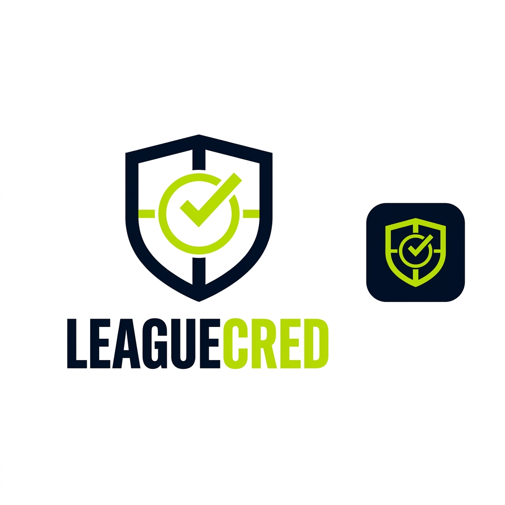
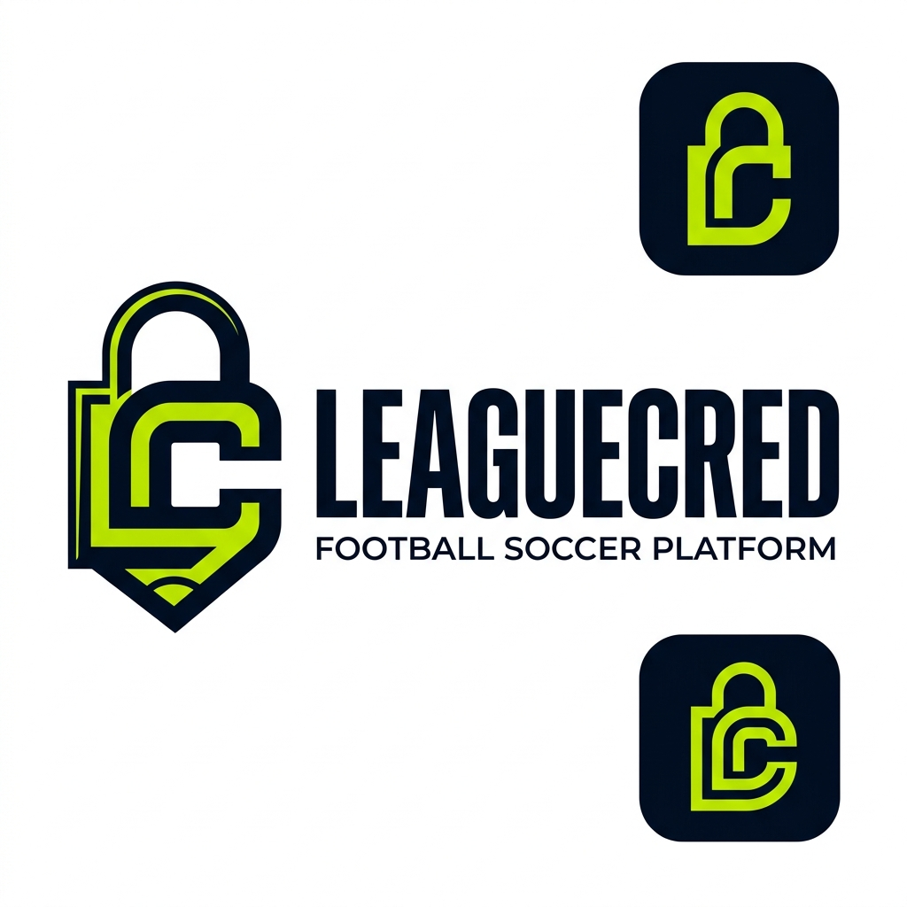
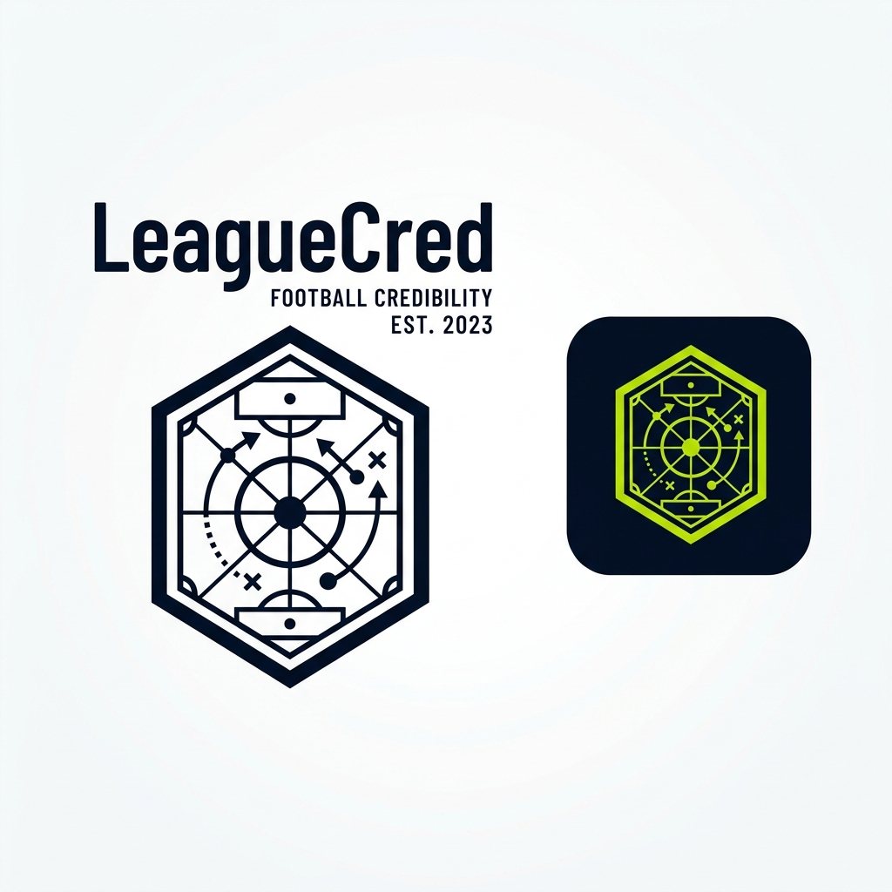
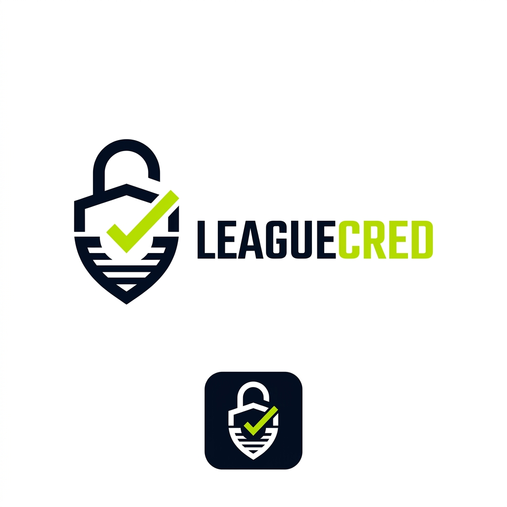

Select the visual identity for the brand mark, header logo, and app favicons.

A geometric football shield framing a kickoff center circle and verified checkmark. Ultra-clean vector lines that scale down to 16×16 favicon perfectly.

Architectural monogram intertwining "L" and "C" into a padlock silhouette and tactical corner arcs.

Analytical scouting and intelligence badge featuring pitch coordinates, pass lines, and center circle in a modern hexagon.

Clean padlock body combined with the lower V-contour of a traditional football crest and an electric lime checkmark.